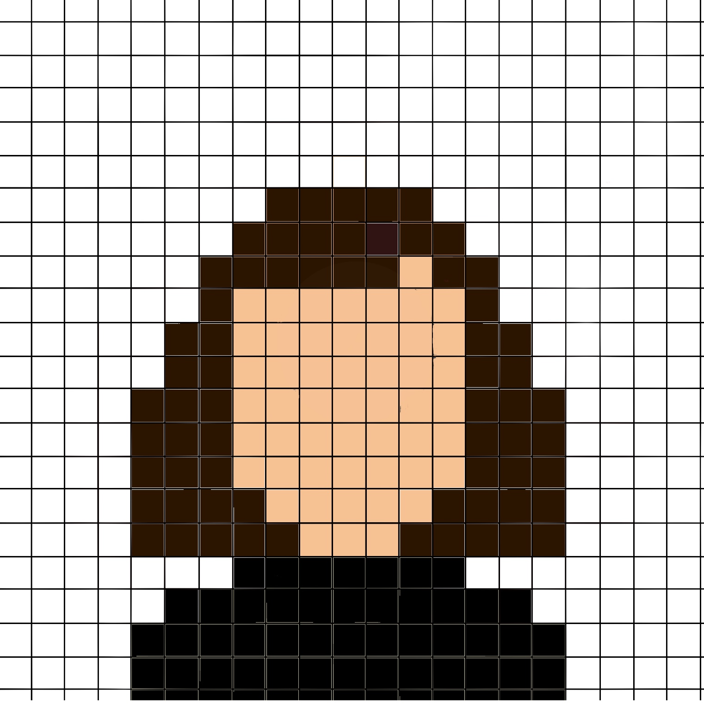

Cumulus Culminations: Learning to read the clouds
Introduction
Classroom
Theory
Conclusion
References

Design and Coding Assistant
Clouds v.1
Clouds v.2
Reflection
Word-watching commentary
Sagely Insight
Project 2.0 Findings
Issue 23 (2016)
action
agency
algorithms
approach
attention
become
circulation
code
communication
computer
context
cultural
delivery
development
different
example
experience
field
form
habit
human
image
include
invention
meaning
media
methods
perform
persuasive
photograph
practices
present
process
production
project
protest
public
reading
research
social
space
studies
technology
texts
theory
understanding
users
visual
work
writing
Issue 24 (2017)
active
ad
addiction
ar
argues
argument
articulation
audience
become
change
claims
coal
community
companies
create
cultural
data
design
different
disability
discourse
displays
experience
heritage
human
images
important
information
material
people
practice
process
production
public
rather
social
space
students
suggest
tactical
technology
templates
users
values
view
voice
web
work
world
writing
Issue 25 (2017-2018)
actions
argues
assessment
audience
bing
change
circulation
community
composition
consumers
create
cultural
describe
different
dissociation
effect
elements
experience
images
invention
local
material
meaning
media
memory
multimodal
music
myth
objects
people
point
power
present
process
protests
rhodes
sound
space
starbucks
statue
students
study
subject
sutt
terms
used
video
words
work
writing
Issue 26 (2018)
aesthetic
antisemitism
archive
argues
circulation
classroom
describes
different
experience
genre
human
including
information
interesting
interruption
listening
material
means
music
notes
objects
oppen
parasite
point
possible
practices
question
rather
relation
response
sense
serres
sonic
sound
soundscape
specific
students
studies
suggests
term
things
thinking
toward
trump
ulmer
understanding
white
work
world
writing
Issue 27 (2018)
act
america
american
artists
asian
audience
become
belonging
bodies
brothers
camp
chinese
citizenship
community
context
cultural
different
drawing
example
experience
food
fung
generation
hipster
history
identity
images
incarceration
including
japanese
means
nah
national
orientalism
people
political
power
practices
present
racialized
social
sonic
sound
states
studies
trans
transnational
video
ways
work